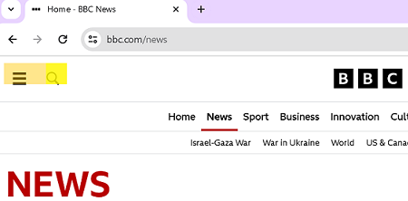

Welcome to the Yellownotes in the Cloud
... or, how to do Yellownotes
It is a simple note-taking and reading tool that allows you to place notes on any web page, and read notes placed there by others.You will have noticed that in the upper-left corner of your browser there is now a semi-transparent yellow bar. It is placed there by the Yellow Notes in the Cloud extension.
It is a sliding button with three positions. Operate it by clicking or touching the position on the slider the button should be moved to.
controls
Slider button in the left position

This will prevent the showing of any notes on the page.
any notes present on the page will be remove when the slider is put in this position
The middle position

show only your own notes. Any notes that are not yours, will be removed.
The right position

Show all applicable notes. Yours, and all notes that are part of feeds you subscribe to.
The frame note example

show all applicable notes. Notes will be placed in the position they are assigned to by their creator.
how to create yellow notes
Yellownotes are created from the context menu. Either highlight the part of the page you want to attach a note to and right click. Or place the cursor where you want the not, and then rigth click.
If you are using a touch screen it is much the same with the difference that you simply press and hold, to open the context menu
Yellow Notes come in two types, the "classic" or plain yellow note - much like the yellow paper sticky note made digital, and the web content note.
"plain" yellow notes
a plain square you can type a message text into.
attach a yellow note to a selection

attach a yellow note to a page
attach a yellow note to a page

web content notes
This note contains the content refered to by a URL. It is a window into another webpage.
attach a webcontent note to a selection

attach a webcontent note to a page